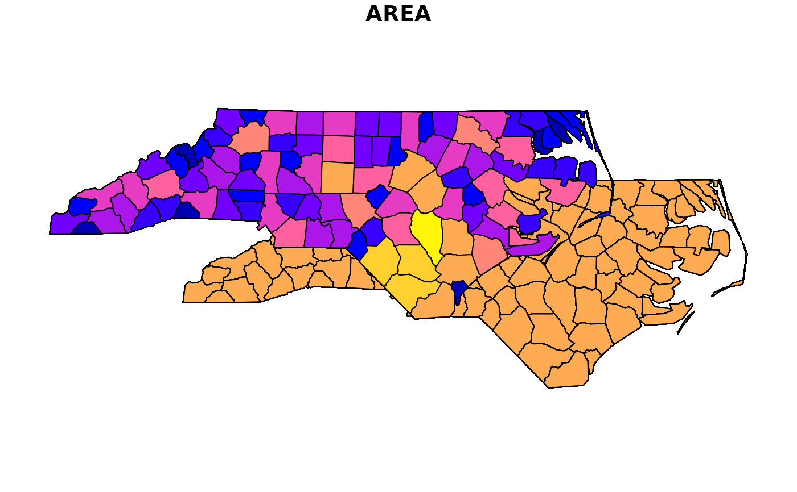

Nudge a simple feature to the center of another feature and/or a set distance
Source:R/st_nudge.R
st_nudge.RdNudge, move, or shift a sf, sfc, or bbox object to the center of
another feature and/or by a set distance.
Usage
st_nudge(
x,
to = NULL,
nudge_y = 0,
nudge_x = 0,
unit = NULL,
scale = 1,
rotate = 0,
crs = NULL
)
# Default S3 method
st_nudge(
x,
to = NULL,
nudge_y = 0,
nudge_x = 0,
unit = NULL,
scale = 1,
rotate = 0,
crs = NULL
)
# S3 method for class 'bbox'
st_nudge(x, ...)
# S3 method for class 'sf'
st_nudge(x, ...)Arguments
- x
Object to convert to an sf, sfc, bbox or a sf list object.
- to
sf object to use as new center for x or length 2 numeric vector with the nudge_y and nudge_x distance (in that order).
- nudge_y, nudge_x
Distance to nudge geometry in unit. If unit is
NULL, distance is assumed to be in the same units as the coordinate reference system of the input object.- unit
Units for nudge_y and nudge_x distance (also used if to is numeric).
- scale
numeric; scale factor, Default: 1
- rotate
numeric; degrees to rotate (-360 to 360), Default: 0
- crs
Coordinate reference system for
sf,bbox,sfcorsflist object to return.- ...
Additional parameters passed to as_sf, as_sfc, as_bbox, or as_sf_list
Examples
nc <- sf::read_sf(system.file("shape/nc.shp", package = "sf"))
nc <- sf::st_transform(nc, crs = 3857)
plot(sf::st_union(st_nudge(nc, to = nc[1, ]), nc), max.plot = 1)
#> Warning: attribute variables are assumed to be spatially constant throughout all geometries
